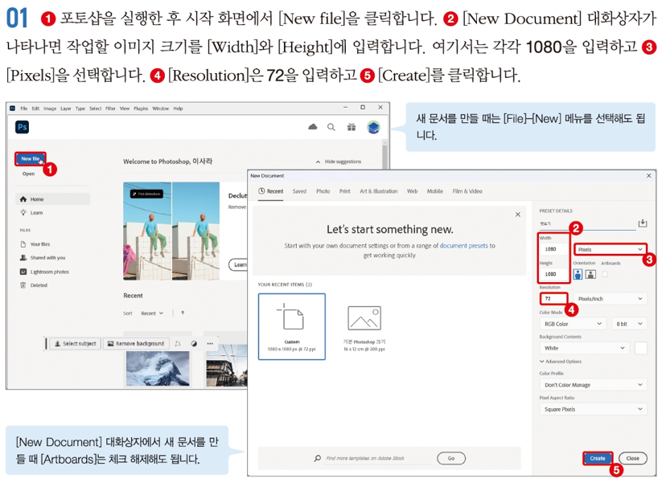

[2차시] 02-01_포토샵 기본
1. 별빛 여행 포스터 만들기
[작업 전]

[작업 후]

1. 새 문서 만드는 New


2. 이미지를 불러오는 Open

경복궁.jpg(click 🖱️)
3. 이미지 크기를 조절하는 Image Size

4. 이미지를 복사해서 붙여넣기 Ctrl+A, Ctrl+V

5. 오브젝트 옮기는 이동 도구

6. 작업 화면 비율을 조절하는 돋보기 도구

7. 드래그하여 빠르게 선택하는 개체 선택 도구

8. 오브젝트 크기를 조절하는 Transform

9. 자연스럽게 제거하는 스팟 복구 브러시 도구

10. 필요한 부분만 오려내는 올가미 도구

11. 이미지를 합성하는 Place Embedded

밤하늘.jpg(click 🖱️)
12. 원본 손상 없이 숨겨주는 레이어 마스크

13. 캔버스 크기를 조절하는 Canvas Size

14. 도형을 그리는 셰이프 도구

15. 문자를 입력하는 문자 도구

16. 레이어를 합성하는 블렌딩 모드

17. 색상을 추출하는 스포이트 도구

18. 불필요한 부분을 제거하는 스포이트 도구

19. 화면을 옮기는 손바닥 도구

20. 이미지로 저장하는 Export As